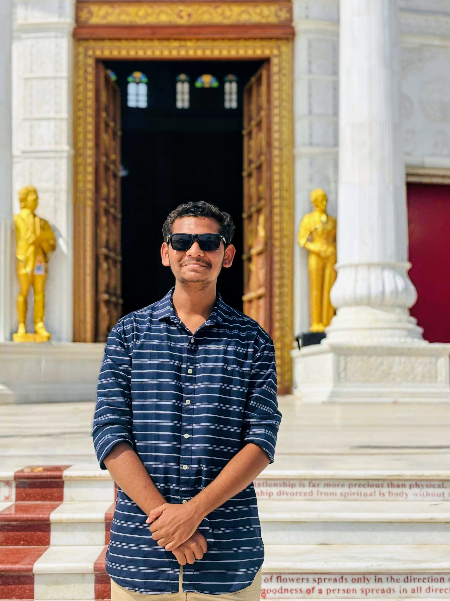

About Me

Who Am I?
I am a first-year Data Science Engineering student at MIT Academy of Engineering (MITAOE), Alandi, Pune. Originally from Bhandara, I have a keen interest in data science, machine learning, and artificial intelligence.
I am passionate about exploring data-driven solutions and learning how technology can be leveraged to solve real-world problems. With a strong foundation in mathematics, programming, and analytics, I aim to build a career in AI, predictive modeling, and big data analytics.
Currently, I am developing my skills in Python, statistics, and data visualization tools, while working on small projects to enhance my practical knowledge. I am always eager to learn, collaborate, and grow in the field of data science.
Get In Touch